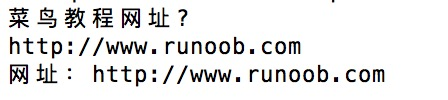

Perl ファイル操作
Perl はファイルハンドルタイプと呼ばれる変数を使ってファイルを操作します。
ファイルからデータを読み取ったり書き込んだりするには、ファイルハンドルが必要です。
ファイルハンドル(file handle)はI/O接続の名前です。
Perl には3種類のファイルハンドルがあります:STDIN，STDOUT，STDERR、それぞれ次のものを表します標準入力、標準出力と標準エラー出力。
Perl でファイルを開くには、以下の方法を使用できます:
open FILEHANDLE, EXPR open FILEHANDLE sysopen FILEHANDLE, FILENAME, MODE, PERMS sysopen FILEHANDLE, FILENAME, MODE
パラメータの説明:
- FILEHANDLE: ファイルハンドル。ファイルの一意な識別子を格納するために使用します。
- EXPR: ファイル名とファイルアクセス種別からなる式。
- MODE: ファイルアクセス種別。
- PERMS: アクセス権限ビット(permission bits)。
open 関数
以下のコードでは、open 関数を読み取り専用で使用して<ファイル file.txt を開きます:
open(DATA, "<file.txt");
<は読み取り専用を表します。
コード内の DATA はファイルを読み取るためのファイルハンドルです。次の例では、ファイルを開いてその内容を出力します:
例
以下のコードは書き込み>の方法でファイル file.txt を開きます:
open(DATA, ">file.txt") or die "file.txt 文件无法打开, $!";
>は書き込みモードを表します。
ファイルを読み書きモードで開く必要がある場合は、> または < の文字の前に + 記号を追加します:
open(DATA, "+<file.txt"); or die "file.txt 文件无法打开, $!";
この方法ではファイルの元の内容は削除されません。削除する場合は、形式は次のようになります:
open DATA, "+>file.txt" or die "file.txt 文件无法打开, $!";
ファイルにデータを追加する場合は、データを追加する前に、ファイルを追加モードで開くだけで済みます:
open(DATA,">>file.txt") || die "file.txt 文件无法打开, $!";
>>は既存のファイルの末尾にデータを追加することを表します。追加するファイルの内容を読み取る必要がある場合は、+ 記号を追加します:
open(DATA,"+>>file.txt") || die "file.txt 文件无法打开, $!";
以下の表にさまざまなアクセスモードを示します:
| モード | 説明 |
|---|---|
| < または r | 読み取り専用で開き、ファイルポインタをファイルの先頭に指します。 |
| > または w | 書き込みモードで開き、ファイルポインタをファイルの先頭に指し、ファイルサイズをゼロに切り詰めます。ファイルが存在しない場合は作成を試みます。 |
| >> または a | 書き込みモードで開き、ファイルポインタをファイルの末尾に指します。ファイルが存在しない場合は作成を試みます。 |
| +< または r+ | 読み書きモードで開き、ファイルポインタをファイルの先頭に指します。 |
| +> または w+ | 読み書きモードで開き、ファイルポインタをファイルの先頭に指し、ファイルサイズをゼロに切り詰めます。ファイルが存在しない場合は作成を試みます。 |
| +>> または a+ | 読み書きモードで開き、ファイルポインタをファイルの末尾に指します。ファイルが存在しない場合は作成を試みます。 |
Sysopen 関数
sysopenは open 関数に似ていますが、引数の形式が異なります。
次の例は、読み書き(+<filename)の方法でファイルを開きます:
sysopen(DATA, "file.txt", O_RDWR);
ファイルを更新する前にファイルを空にする必要がある場合は、次のように記述します:
sysopen(DATA, "file.txt", O_RDWR|O_TRUNC );
O_CREAT を使用して新しいファイルを作成できます。O_WRONLY は書き込み専用モード、O_RDONLY は読み取り専用モードです。
The PERMSパラメータは8進数の属性値で、ファイル作成後の権限を表します。デフォルトは0x666。
以下の表に可能なモード値を示します:
| モード | 説明 |
|---|---|
| O_RDWR | 読み書きモードで開き、ファイルポインタをファイルの先頭に指します。 |
| O_RDONLY | 読み取り専用で開き、ファイルポインタをファイルの先頭に指します。 |
| O_WRONLY | 書き込みモードで開き、ファイルポインタをファイルの先頭に指し、ファイルサイズをゼロに切り詰めます。ファイルが存在しない場合は作成を試みます。 |
| O_CREAT | ファイルの作成 |
| O_APPEND | ファイルの追記 |
| O_TRUNC | ファイルサイズをゼロに切り詰めます |
| O_EXCL | O_CREAT 使用時にファイルが存在する場合は、エラーメッセージを返します。これによりファイルが存在するかどうかをテストできます。 |
| O_NONBLOCK | 非ブロッキングI/Oにより、操作は成功するか、すぐにエラーを返すかのどちらかになり、ブロックされません。 |
Close 関数
ファイルの使用が終わったら、ファイルを閉じて、ファイルハンドルに関連付けられた入出力バッファをフラッシュする必要があります。ファイルを閉じる構文は次のとおりです:
close FILEHANDLE close
FILEHANDLE は指定されたファイルハンドルです。正常に閉じた場合は true を返します。
close(DATA) || die "无法关闭文件";
ファイルの読み書き
ファイルへの情報の読み書きには、いくつかの異なる方法があります:
<FILEHANDL> 演算子
開いたファイルハンドルから情報を読み取る主な方法は <FILEHANDLE> 演算子です。スカラコンテキストでは、ファイルハンドルから単一行を返します。例:
例
上記のプログラムを実行すると、次の情報が表示されます。URLを入力すると、print文が出力します:

<FILEHANDLE> 演算子を使用すると、ファイルハンドル内の各行のリストが返されます。例えば、すべての行を配列に取り込むことができます。
まず import.txt ファイルを作成します。内容は次のとおりです:
$ cat import.txt 1 2 3
import.txt を読み取り、各行を @lines 配列に格納します:
例
上記のプログラムを実行すると、出力結果は次のようになります:
1 2 3
getc 関数
xgetc 関数は、指定された FILEHANDLE から単一の文字を返します。指定がない場合は STDIN を返します:
getc FILEHANDLE getc
エラーが発生した場合、またはファイルハンドルがファイルの末尾にある場合は、undef を返します。
read 関数
read 関数は、バッファ付きファイルハンドルから情報を読み取るために使用します。
この関数は、ファイルからバイナリデータを読み取るために使用します。
read FILEHANDLE, SCALAR, LENGTH, OFFSET read FILEHANDLE, SCALAR, LENGTH
パラメータの説明:
- FILEHANDLE: ファイルハンドル。ファイルの一意な識別子を格納するために使用します。
- SCALAR: 結果を格納します。OFFSET が指定されていない場合、データは SCALAR の先頭に置かれます。それ以外の場合、データは SCALAR 内の OFFSET バイトの後に置かれます。
- LENGTH: 読み取る内容の長さ。
- OFFSET: オフセット。
読み取りが成功した場合は読み取ったバイト数を返し、ファイルの末尾の場合は 0 を返し、エラーが発生した場合は undef を返します。
print 関数
ファイルハンドルから情報を読み取るすべての関数に対して、バックエンドの主要な書き込み関数は print です:
print FILEHANDLE LIST print LIST print
ファイルハンドルと print 関数を使用すると、プログラムの実行結果を出力デバイス(STDOUT: 標準出力)に送ることができます。例:
print "Hello World!\n";
ファイルのコピー
次の例では、既存のファイル file1.txt を開き、その各行を読み取ってファイル file2.txt に書き込みます:
例
ファイルの名前変更
次の例では、既存のファイル file1.txt を file2.txt に名前変更します。指定されたディレクトリは /usr/runoob/test/ です:
#!/usr/bin/perl
rename ("/usr/runoob/test/file1.txt", "/usr/runoob/test/file2.txt" );
関数renamesは2つの引数のみを受け取り、既存のファイルのみの名前を変更します。
ファイルの削除
次の例では、以下の使用方法を示しますunlink関数を使用してファイルを削除します:
例
ファイル位置の指定
を使用できますtell関数を使用してファイルの位置を取得し、 を使用することでseek関数を使用してファイル内の位置を指定できます:
tell 関数
tell 関数はファイル位置を取得するために使用します:
tell FILEHANDLE tell
FILEHANDLE を指定すると、この関数はファイルポインタの位置をバイト単位で返します。指定がない場合は、デフォルトで選択されたファイルハンドルを返します。
seek 関数
seek() 関数は、ファイルハンドルを通じてファイルの読み書きポインタを移動してファイルを読み書きするもので、バイト単位で読み書きを行います:
seek FILEHANDLE, POSITION, WHENCE
パラメータの説明:
- FILEHANDLE：ファイルハンドル。ファイルの一意な識別子を格納するために使用します。
- POSITION：ファイルハンドル（読み書き位置ポインタ）を移動するバイト数を示します。
- WHENCE：ファイルハンドル（読み書き位置ポインタ）が移動を開始するときの開始位置を示します。0、1、2の値を取ることができ、それぞれファイルの先頭、現在位置、ファイルの末尾を表します。
以下の例は、ファイルの先頭から256バイトを読み取るものです：
seek DATA, 256, 0;
ファイル情報
Perlのファイル操作では、ファイルが存在するか、読み書き可能かなどを事前にテストすることもできます。
まず file1.txt ファイルを作成します。内容は以下のとおりです：
$ cat file1.txt www.runoob.com
例
上記のプログラムを実行すると、出力結果は次のようになります：
file1.txt 信息：是一个文本文件, 15 字节
ファイルテスト演算子は以下の表のとおりです：
| 演算子 | 説明 |
|---|---|
| -A | ファイルが最後にアクセスされた時間（単位：日） |
| -B | バイナリファイルであるかどうか |
| -C | ファイルの(inode)インデックスノード変更時間（単位：日） |
| -M | ファイルが最後に変更された時間（単位：日） |
| -O | ファイルが実UIDによって所有されている |
| -R | ファイルまたはディレクトリが実UID/GIDによって読み取り可能 |
| -S | ソケットである |
| -T | テキストファイルであるかどうか |
| -W | ファイルまたはディレクトリが実UID/GIDによって書き込み可能 |
| -X | ファイルまたはディレクトリが実UID/GIDによって実行可能 |
| -b | ブロックスペシャル（特殊ブロック）ファイルである（マウントされたディスクなど） |
| -c | キャラクタスペシャル（特殊キャラクタ）ファイルである（I/Oデバイスなど） |
| -d | ディレクトリである |
| -e | ファイルまたはディレクトリ名が存在する |
| -f | 通常ファイルである |
| -g | ファイルまたはディレクトリがsetgid属性を持つ |
| -k | ファイルまたはディレクトリにスティッキービットが設定されている |
| -l | シンボリックリンクである |
| -o | ファイルが実効UIDによって所有されている |
| -p | ファイルが名前付きパイプ（FIFO）である |
| -r | ファイルが実効UID/GIDによって読み取り可能 |
| -s | ファイルまたはディレクトリが存在し、サイズが0ではない（バイト数を返す） |
| -t | ファイルハンドルがTTYである（システム関数isatty()の戻り結果。ファイル名に対してこのテストは使用できない） |
| -u | ファイルまたはディレクトリがsetuid属性を持つ |
| -w | ファイルが実効UID/GIDによって書き込み可能 |
| -x | ファイルが実効UID/GIDによって実行可能 |
| -z | ファイルが存在し、サイズが0である（ディレクトリは常にfalse）。つまり空のファイルであるかどうか |